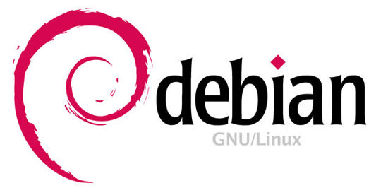
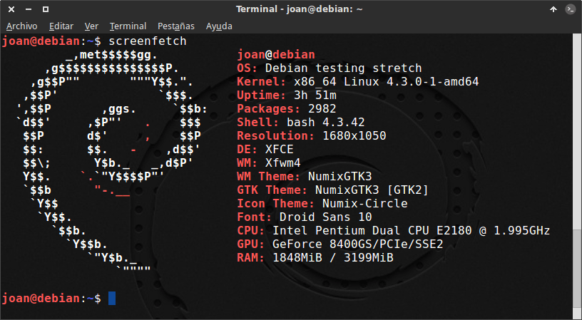

Historia de Debian
Debian nació en el año 1993 con la idea de crear un sistema GNU usando Linux como núcleo. Es un sistema operativo libre, desarrollado por miles de voluntarios
de todo el mundo, que colaboran a través de Internet. Esto hace que sea totalmente independiente de las empresas, sin depender de ninguna manera de necesidades
comerciales. Debian no vende directamente su software, sino que lo pone a disposición de cualquiera en Internet, aunque sí permite a personas o empresas
distribuir comercialmente este software mientras se respete su licencia.
El Contrato Social de Debian dice que Debian es 100% libre, contribuye a la comunidad de software libre, no oculta los problemas y la prioridad son los usuarios
y el software libre. Esto implica que Debian no tenga las últimas novedades en GNU/Linux, pero sí tiene el sistema operativo más estable posible. Esto se
logra por medio de paquetes y librerías antiguas pero con muchos meses de pruebas, asegurando la máxima estabilidad de cada versión que es lanzada.
El proyecto Debian fue fundado por Ian Murdock. Él escribió el manifiesto de Debian, que utilizó como base para la creación de la distribución Linux Debian.
El nombre de este se basa en la combinación del nombre de su entonces novia "Deborah" con su propio nombre: "Ian", formando el acrónimo: Debian.
Debian es perfectamente compatible con cualquier arquitectura de hardware y ha sido inspiración para iniciativas nuevas como Ubuntu. La mayoría de los paquetes
en Debian son completamente gratuitos para los usuarios finales y desarrolladores, por eso ha tenido una gran aceptación en la comunidad de informática.
La mayor ventaja de Debian es que es un sistema operativo que puede instalarse en todo tipo de dispositivos y no necesita de mucho hardware para funcionar.
Se puede instalar en tablets, móviles, ordenadores e incluso en dispositivos como Raspberry, con la cual es perfectamente compatible y tiene hasta su propio
sistema operativo basado en Debian, Raspbian.
Referencia: Wikipedia
Características de Debian
- Multiusuario: permite a varios usuarios acceder al mismo tiempo a través de terminales, y distribuye los recursos disponibles entre todos.
- Multiplataforma: Es decir que puede correr en la mayoría de plataformas del mercado (procesadores de la gama Intel y AMD, Motorola, Sun, Sparc, etc.).
- Kernel: Los sistemas Debian actualmente usan el núcleo de Linux.
- Distribución libre y gratuita, tanto del Sistema Operativo como de las actualizaciones del mismo.
- Es uno de los Sistemas Operativos más estables en la actualidad.
- Casi no existen los malware o virus para este sistema Operativo.
Referencia 1: Info de Debian
Referencia 2: Características

Versiones de Debian
Las distintas versiones de Debian tienen nombres clave tomados de la película "Toy Story". Esto tiene una explicación y es que, el sucesor de Ian Murdock
fue Bruce Perens que por esa época trbajaba para Pixar, concretamente en la productora de Toy Story. Bruce decidió ponerle a la primera versión de Debian, la 1.1,
«Buzz» por «Buzz Lightyear», uno de los protagonistas de la película. Desde entonces se ha seguido con la tradición.
Hasta la fecha, hay 12 versiones estables de Debian.
Debian tiene una versión inestable. Es la versión más actualizada de todas, pero también es la que mayores problemas presenta debido a que está en fase
de desarrollo. Como curiosidad, esta versión siempre tiene el mismo nombre clave: "Sid", el antagonista de la película "Toy Story".

Consola de Debian. Se puede ver la versión del kernel.
Tabla de versiones
| Versión |
Nombre en clave |
Fecha |
| 1.1 |
buzz |
17 de junio de 1996 |
| 1.2 |
rex |
12 de diciembre de 1996 |
| 1.3 |
bo |
2 de junio de 1997 |
| 2.0 |
hamm |
24 de julio de 1998 |
| 2.1 |
slink |
9 de marzo de 1999 |
| 2.2 |
potato |
15 de agosto del 2000 |
| 3.0 |
woody |
19 de julio de 2002 |
| 3.1 |
sarge |
6 de junio de 2005 |
| 4.0 |
etch |
8 de abril de 2007 |
| 5.0 |
lenny |
14 de febrero de 2009 |
| 6.0 |
squeeze |
6 de febrero de 2011 |
| 7.0 |
wheezy |
4 de mayo de 2013 |
| 8.0 |
jessie |
25 de abril de 2015 |
| 9.0 |
stretch |
17 de junio de 2017 |
| 10 |
Buster |
6 de julio de 2019 |
| 11 |
Bullseye |
14 de agosto de 2021 |
Referencia: Versiones